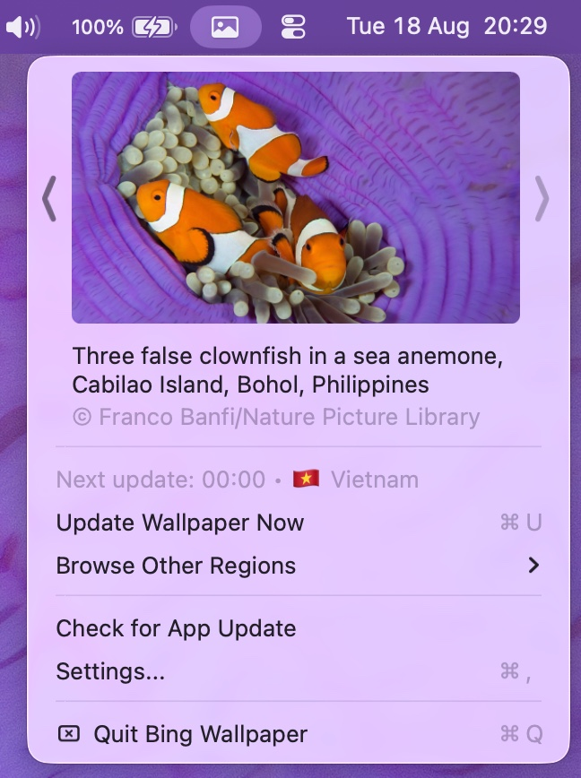
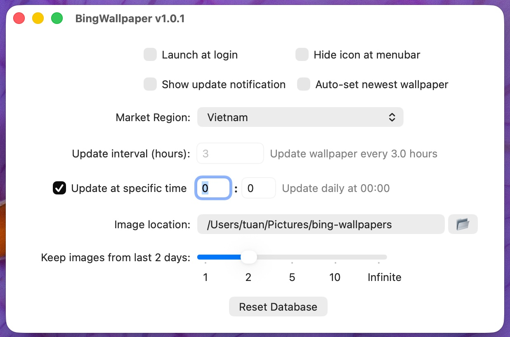

What it does, in numbers
| Bing market regions | 55 — 8 pinned as popular, the rest under All Regions… |
|---|---|
| Wallpaper resolution | 3840×2160 — the app rewrites Bing's 1920x1080 URL to UHD |
| Network per check | 1 HTTPS GET to bing.com/HPImageArchive.aspx, plus the image itself only when it is new |
| Installed app bundle | 2.5 MB — universal binary of 1.02 MB (x86_64 + arm64) |
| Installer download | 1.5 MB .pkg |
| Minimum macOS | 11.0 Big Sur — minos 11.0 in the shipped Mach-O |
| Hostnames contacted | 2 in the whole source: www.bing.com and github.com |
| Dock icon | none — LSUIElement is true |
Features
Automatic daily updates
Checks every 3 hours by default, or once a day at a fixed time you pick. If the Mac was asleep, the update runs on wake instead of being skipped.
Every monitor, every Space
Applies the image through System Events so all desktops on all screens change, not just the one in front of you.
55 country regions
Bing publishes a different picture per market. Pick yours in Settings — US, UK, Germany, France, Japan, China, Korea, Vietnam and 47 more.
Browse other regions
Pull today's image from any other country without changing your own setting, then use Back to My Region to return.
Disk stays tidy
Choose the download folder and keep images for 1, 2, 5 or 10 days — or forever. Older files are deleted automatically.
Stays out of the way
Menu bar only, no Dock icon. Optional launch at login, optional change notification, and the menu bar icon can be hidden entirely.
Install
Download BingWallpaper.pkg from the Releases page and double-click it. It installs to /Applications/BingWallpaper.app.
The app is not signed with an Apple Developer ID and not notarized, so macOS quarantines it. Clearing the quarantine attribute is a required one-time step:
sudo xattr -cr /Applications/BingWallpaper.app
open /Applications/BingWallpaper.appOn first wallpaper change macOS asks for permission to control System Events. Click OK — that is the only permission the app needs.
Frequently asked questions
How do I automatically set the Bing image of the day as my wallpaper on macOS?
Install this app and launch it — that is the whole setup. It fetches Bing's picture of the day and applies it to every monitor and every Space. macOS has no built-in way to do this: the Wallpaper pane in System Settings can rotate a local folder, but it cannot pull Bing's daily image. By default the app re-checks every 3 hours; you can switch to a fixed daily time instead, and 00:00 lines up with when Bing publishes.
Is Bing Wallpaper for Mac free? Is there a paid tier or a subscription?
Free, with no paid tier, no subscription, no account and no in-app purchase. The source is on GitHub and you can build it yourself with Xcode.
What permissions does it need?
One: Automation access to System Events, which macOS asks for the first time the app sets a wallpaper. The app uses AppleScript because that is the way to cover every Space, not just the visible one. It does not request Full Disk Access, Screen Recording, Accessibility or Contacts, and it writes only to the download folder you choose (default ~/Pictures/bing-wallpapers) and its own preferences.
Does it send my data anywhere?
There are exactly two hostnames in the entire Swift source: www.bing.com for the image feed, and github.com for the Check for App Update button. No analytics SDK, no telemetry, no crash reporter and no account. The source is public, so you can grep it yourself.
Does it work with multiple monitors, multiple Spaces and Stage Manager?
Multiple monitors and multiple Spaces: yes, that is what the AppleScript path is for — every desktop on every screen gets the same image. Stage Manager changes how windows are grouped rather than what the desktop picture is, so the wallpaper the app sets is the one Stage Manager shows.
Does it work on Apple Silicon? On Intel? On which macOS versions?
The shipped binary is universal — lipo reports x86_64 and arm64 — so it runs natively on both Apple Silicon and Intel Macs. The Mach-O declares minos 11.0, so macOS 11 Big Sur is the floor. It is built and used day to day on macOS 26.
Will it fight with my menu bar manager, such as Bartender, Ice or Hidden Bar?
The app creates a standard NSStatusItem rather than a custom floating window, so anything that manages ordinary menu bar items treats it like any other icon. If you would rather have no icon at all, the Hide icon at menubar setting removes it and the app keeps updating in the background.
I already use Microsoft's Bing Wallpaper app — can I just use that on my Mac?
No. Microsoft's official Bing Wallpaper download page lists its supported operating systems as Windows 10 and Windows 11; macOS is not among them (checked August 2026). This project exists to fill that gap on macOS, and adds a 55-region picker and per-region browsing on top.
How is this different from the original 2h4u/BingWallpaper-for-Mac?
This is a fork of 2h4u/BingWallpaper-for-Mac and credits it as such. That project's README describes the core behaviour — automatically downloading the newest Bing wallpaper and setting it for all monitors and spaces — and does not document region selection, scheduling modes or retention settings. This fork adds a 55-region market picker, a Browse Other Regions submenu, a fixed-daily-time schedule as an alternative to the interval, retention of 1, 2, 5 or 10 days or forever, an in-app update check, and a .pkg installer.
Why does macOS say "BingWallpaper is damaged and can't be opened"?
This is the most common install problem, and the app is not damaged. It is not signed with an Apple Developer ID and not notarized, so macOS attaches a com.apple.quarantine attribute to the download and Gatekeeper refuses to launch it. Run sudo xattr -cr /Applications/BingWallpaper.app in Terminal, then open the app. The same command fixes the sibling messages about Apple not being able to check it for malicious software, or the developer not being verified. It only clears that extended attribute and does not modify the app.
Where are the downloaded wallpapers stored, and do they pile up?
By default in ~/Pictures/bing-wallpapers, changeable in Settings, named by date such as 20260819.jpg. At 3840×2160 a Bing JPEG runs roughly 3 to 4 MB, so keeping them forever costs about 1.1 to 1.5 GB a year; the retention setting of 1, 2, 5 or 10 days deletes older files automatically.
Can I get a different country's wallpaper without changing my settings?
Yes — click the menu bar icon, open Browse Other Regions and pick a country. That region's image of the day is downloaded and applied immediately, and Back to My Region returns you to your configured region. Eight regions are pinned for quick access — US, UK, Germany, France, Japan, China, Korea and Vietnam — with the other 47 under All Regions.
Does it need to be running for the wallpaper to change? What if my Mac was asleep?
Yes, it needs to be running, so turn on Launch at login in Settings to have it start with your session. If the Mac was asleep or off at the scheduled moment, the update runs when it wakes up rather than being skipped.